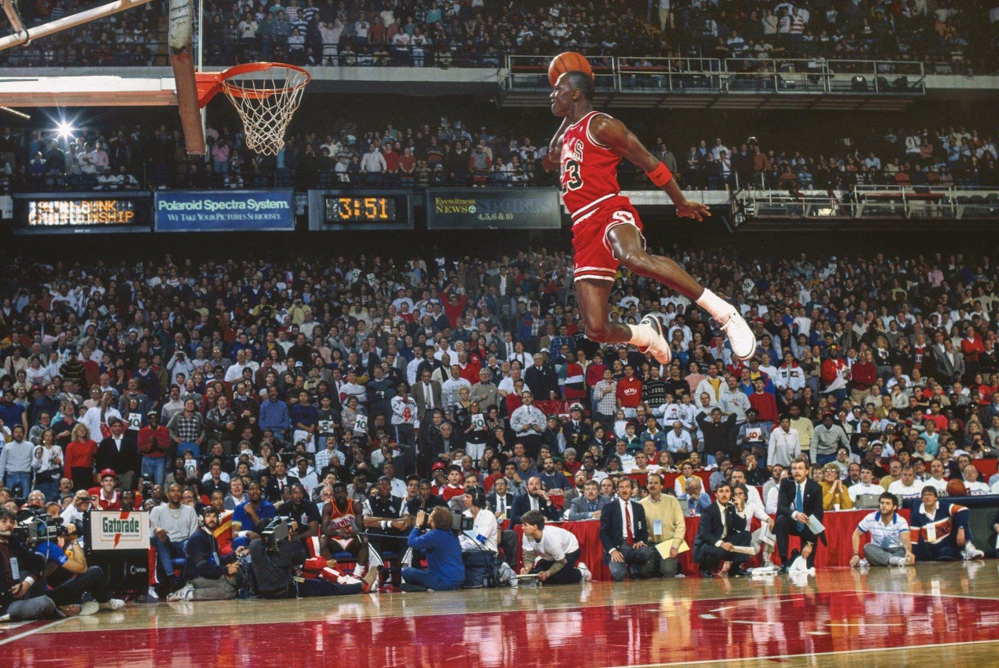

Michael Jeffrey Jordan (Nueva York; 17 de febrero de 1963) es un exjugador de baloncesto estadounidense. Con 1,98 metros de altura, jugaba en la posición de escolta. Es considerado por la mayoría de aficionados y especialistas como el mejor jugador de baloncesto de todos los tiempos. Se retiró definitivamente en 2003 en los Washington Wizards, tras haberlo hecho en dos ocasiones anteriores, en 1993 y 1999, después de haber jugado 13 temporadas en los Chicago Bulls.
Ganó seis anillos con Chicago Bulls, promediando 30,1 puntos por partido en toda su carrera deportiva, el mayor promedio en la historia de la liga. También ganó 10 títulos de máximo anotador, 5 MVP de la temporada, 6 MVP de las Finales; fue nombrado en el mejor quinteto de la NBA en diez ocasiones, en el defensivo nueve veces, líder en robos de balón durante tres años y un premio al mejor defensor de la temporada.
Desde 1983, ha aparecido en la portada de la prestigiosa revista deportiva Sports Illustrated en 50 ocasiones, todo un récord, además de ser designado deportista del año en 1991 y mejor atleta del siglo XX por ESPN y segundo tras Babe Ruth por Associated Press.
En la actualidad es el propietario del equipo de los Charlotte Hornets en la NBA y del 23XI Racing en la Copa NASCAR. Se calcula que su patrimonio neto es de $1600 millones.
Medallista Olimpico
| Datos Personales | |||
|---|---|---|---|
| Nombre Completo | Michael Jeffrey Jordan | ||
| Apodo(s) | "Mike", "Air Jordan", "M.J.", "His Airness", "G.O.A.T.", "Black Jesus" | ||
| Nacimiento | Nueva York, Estados Unidos 17 de febrero de 1963. | ||
| Altura Peso |
1,98 m (6 ′ 6 ″) 98 kg (216 lb) |
||
| Trayectoria | |||
|
|||
| Medallero | |||
| Baloncesto Masculino Estados Unidos |
|||
| Juegos Olímpicos | |||
| ORO | Los Ángeles '84 | Baloncesto | |
| ORO | Barcelona '92 | Baloncesto | |
| Campeonato FIBA Américas | |||
| ORO | Portland 1992 | Estados Unidos | |
| Juegos Panamericanos | |||
| ORO | Caracas 1983 | Estados Unidos | |
| Títulos | |||
|
|||